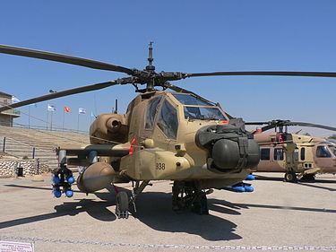
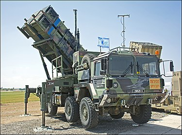
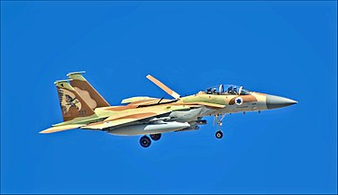
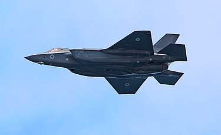

מלחמת העצמאות
ראשיתו של חיל האוויר הישראלי היה "שירות האוויר", הזרוע האווירית של ההגנה. באוקטובר 1947, כש ב-10 בנובמבר עמדו לרשותו 11 מטוסים מטיפוסים טייגר מות', ר.וו.ד.-13, זלין, טיילורקרפט, אוסטר, סי-בי ורפיד. בראשית 1948 נוספו 21 מטוסי אוסטר שנרכשו משלטונות המנדטוריות וכונו בישראל "פרימוס"[10] ולכן בתחילת מלחמת העצמאות הפעיל שירות האוויר רק מטוסי סיור קלים. מפקדו הראשון היה יהושע אייזיק (אשל). באפריל 1948 החליף השם "חיל האוויר", בהדרגה, את השם "שירות האוויר", מבלי שפורסמה הודעה רשמית על כך.
רק אחרי פלישת צבאות ערב השיג חיל האוויר מטוסי קרב בעלי חימוש תקני. בפעולתם הראשונה, ב-29 במאי 1948, תקפו ארבעה מטוסי אוויה S-199 את ראש הטור המצרי סמוך לג'סר איסדוד מצפון לאיסדוד. אחד הטייסים, אדי כהן, נהרג, עוד השתתפו בתקיפה מודי אלון, עזר ויצמן ולו לנרט. התקפה דומה נערכה גם על ראש הטור העיראקי באזור טולכרם. ימים מספר לאחר מכן השיג חיל האוויר הצלחה מוראלית חשובה עת הפיל הטייס מודי אלון, במטוס אוויה, שני מטוסים מצריים שהפציצו את תל אביב לאור יום. ב-4 ביוני 1948 תקפו שלושה מטוסי חיל האוויר ספינה מצרית שהתקרבה לחופי תל אביב. אחד המטוסים נפגע ונפל לים, ושני טייסיו דוד שפרינצק ומתי סוקניק נהרגו (אנדרטה לזכרם מוצבת בגן העצמאות בתל אביב). עם התבססותו, רכש חיל האוויר עליונות אווירית בשמי הארץ ואף הפציץ ערי בירה של מדינות האויב. עמאן הופצצה ב-2 ביוני, דמשק הופצצה ב-10 ביוני 1948 וקהיר הופצצה ב-15 ביולי 1948. לחיל האוויר היה חלק נכבד בשמירת הקשר עם הנגב המנותק, עת העביר במבצע "אבק" (אוגוסט - אוקטובר 1948), אלפי טונות אספקה אל הנגב ואלפי חיילים אל הנגב וממנו. כן שמר חיל האוויר על הקשר עם סדום.
במחצית השנייה של 1948 רכש חיל האוויר עליונות אווירית על חילות האוויר הערביים, דבר שהתבטא בהשתתפותו במבצעים האחרונים של המלחמה, כמו מבצע שוטר בסוף יולי, מבצע יואב ב-15 עד 22 באוקטובר. מבצע חירם בסוף אותו חודש, ובמבצעים בחזית הדרום שסיימו את המלחמה, ובראשם מבצע חורב, בסוף דצמבר ובימים הראשונים של 1949. עם זאת, גם בשלבים אלה כוחו היה דל מכדי להשפיע באופן מכריע על מהלך המלחמה. לקראת תום מלחמת העצמאות היה חיל האוויר שליט יחיד בשמי מדינת ישראל. ב-7 בינואר 1949, בתקרית האוויר הישראלית-בריטית, אף הפיל חמישה מטוסים בריטיים שחגו מעל כוחות צה"ל בחזית הדרומית. במלחמת העצמאות שירתו בחייל גם נשים טייסות. אחת מהן, זהרה לביטוב, נהרגה בתאונת מטוס באוגוסט 1948. בסך הכול הפיל חיל האוויר 21 מטוסי אויב במלחמת העצמאות. לאחר המלחמה היו בחיל האוויר 173 מטוסים מ-20 דגמים. רק 74 מהמטוסים היו שמישים, ומתוכם רק 15 היו מטוסי קרב והפצצה[11]. בדצמבר 1948 עבר מטה חיל האוויר לקריה בתל אביב. עיריית תל אביב הציבה על כך לוחית זיכרון בכניסה לשער דוד ברחוב קפלן.

הוויכוח על מעמדו של חיל האוויר
במקביל למלחמה ועם הקמת צה"ל התקיים ויכוח עז על מקומו של חיל האוויר ותפקידו בצה"ל. הפיקוד העליון של צה"ל, בראשות יגאל ידין (שהיה ראש אגף מבצעים והמפקד בפועל של צה"ל) ראה בחיל האוויר חיל מסייע, כמו חיל התותחנים. מכיוון שכך, ראה המטכ"ל את חיל האוויר ככפוף לו בכל ההיבטים, וסבר שכל ענייני החיל אמורים להגיע מהמעטפת הכלל צה"לית, כמו כל חיל אחר. היבט בולט של תפיסה זו הייתה ההנחה שמפקד החיל אינו חייב להיות טייס, אלא קצין בכיר שיידע לנהל את החיל על פי כללי הניהול והפיקוד של כל חיל אחר. כך התמנה ישראל עמיר למפקד הראשון של חיל האוויר, למרות העובדה שלא היה לו עבר כאיש תעופה[12]. בניגוד לתפיסה זו עמדו ראשי חיל האוויר על כך שעצמאותו של החיל חייבת להישמר, וכי על החיל להיות כפוף ישירות לרמטכ"ל. לתפיסתם, לחיל האוויר יש משימות ייחודיות, הדורשות שהחיל יהיה עצמאי ברוב התחומים שהוזכרו לעיל, הן בתחומים מבצעיים ומודיעיניים והן בתחומים ארגוניים ולוגיסטיים. ראשי החיל דרשו שמפקדם יהיה טייס, ואף הצביעו על אהרן רמז, ששירת כטייס קרב בחיל האוויר המלכותי הבריטי במלחמת העולם השנייה בזירת מערב אירופה. ואולם, רמז היה פלייט סרג'נט בלבד (באנגלית: Flight Sergeant, סמל טיס, דרגה המקבילה בערך לדרגת רב-סמל מתקדם בצה"ל), וכך לא נשמעה דעתו מול הפיקוד הבכיר של צה"ל[13][14]. המחלוקת יצרה קשיים עמוקים בתפקוד חיל האוויר, שהגיעו לשיאם לאחר קרבות עשרת הימים, באמצע יולי 1948. הפיקוד העליון האשים את חיל האוויר בכישלונות מבצעיים ובחוסר יעילות. אהרן רמז האשים בתגובה את הפיקוד העליון בכך שאינו מאפשר לחיל האוויר את התנאים הדרושים להצלחתו[15]. בעצת מתנדבים מדרום אפריקה פנה דוד בן-גוריון לססיל מרגו, יהודי תושב דרום אפריקה שהיה קולונל בחיל האוויר הדרום-אפריקאי ומפקד כנף במהלך מלחמת העולם השנייה, וביקש ממנו להגיע לארץ ולסייע בארגון חיל האוויר.
מרגו הגיע לארץ ב-12 ביולי, ולאחר כמה שבועות הגיש לבן-גוריון את המלצותיו. הוא קבע שהיעד העיקרי של חיל האוויר צריך להיות השמדת כוחו האווירי של האויב, ולקראת יעד זה צריך חיל האוויר להתארגן - מבצעית, ארגונית ומקצועית. חיל האוויר, על פי המלצותיו של מרגו, צריך להיות כפוף ישירות לרמטכ"ל, ולהיות בעל עצמאות ארגונית ומבצעית. מרגו הציע דרכים לארגון פנימי של עבודת החיל ולממשק של החיל עם המטכ"ל, ודרש שהשינוי יתרחש בתוך זמן קצר. המלצותיו של מרגו הביאו להתנגדות רבה. אחד הנושאים שעליהם התנהל ויכוח חריף במיוחד היה השליטה במערך המכ"ם בצה"ל. באותה תקופה לא היו כלל מכשירים כאלה בישראל, אך מרגו עמד על כך שהכרחי לרכשם, ושמערך המכ"ם יהיה בשליטת חיל האוויר. בן-גוריון אימץ מיד את המלצותיו של מרגו. אחת ההמלצות החשובות של מרגו הייתה שחיל האוויר יהיה בפיקוד אנשי צוות אוויר ישראליים, ולא מתנדבים יהודים או לא יהודים שיחזרו בכל עת לארצותיהם. המלצה זו הייתה מקובלת גם על מתנגדיו, ובן-גוריון אימץ גם אותן. בן-גוריון הציע למרגו עצמו לעמוד בראש החיל, אך הוא סירב. שלושה ימים לאחר הגשת ההמלצות מונה אהרן רמז לתפקיד מפקד החיל[ המלצותיו של מרגו היו דומות בעיקרן להמלצות שהגיש אהרן רמז זמן רב לפני כן. ואולם, רמז היה, כאמור, סמל בלבד, שהסתמך על תאוריה; מרגו, לעומתו, היה קצין בדרגת קולונל שפיקד על יחידה גדולה בצבא מאורגן, והכיר מבפנים את ההתנהלות המעשית של חיל אוויר גדול. משום כך הייתה לו סמכות רבה, ובן-גוריון יכול היה לאמץ את המלצותיו ולגבות אותו מול המתנגדים להן. המבנה שהציע מרגו היווה את הבסיס לארגון חיל האוויר ולפעילותו, למעשה עד היום][].
מבצע קדש

מבצע קדש נפתח באוקטובר 1956 כשרביעיית מטוסי מוסטנג נשלחה לנתק את קווי הטלפון מערבית למיתלה, על מנת למנוע דיווח על מהלכי הכוחות הישראליים. גדוד הצנחנים בפיקוד רפאל איתן (רפול) הוצנח ליד מצבת פארקר במעבר המיתלה בסיני ("מבצע מכבש"). את ההצנחה ביצעה טייסת מטוסי דקוטה שהמריאה מבסיס תל נוף. אחת מטייסי המשנה הייתה הטייסת יעל רום. בנוסף להצנחת הצנחנים השתתף ח"א בפעולות תקיפה קרקעיות ובחיפוי על כוחות הקרקע. מטוסי הקרב העיקריים היו: מיסטר, אוראגן, מטאור ו-P-51 מוסטנג. מלחמה זו הייתה הפעם הראשונה בצה"ל שבו נעשה שימוש מבצעי בכסא מפלט. הטייס שנטש את מטוס המיסטר שלו היה בני פלד, לאחר שנפגע מאש נ"מ ליד ראס נצרני. זוג מטוסי אוראגן השתתפו בתקיפת המשחתת המצרית איברהים אל אוול שניסתה להפגיז את חיפה, נכנעה וצורפה לחיל הים כמשחתת "חיפה". בשל העובדה שבמבצע סיני לא היו לח"א מסוקים בשימוש מבצעי, ביצעו מטוסי הפייפר את רוב משימות התובלה הקלה, ובכללן שינוע מפקדים וחילוץ פצועים. מטוסי הפייפר השתמשו בכבישים כמסלולי טיסה, כדי להתקרב לכוחות הלוחמים, שהיו רחוקים ממסלולי טיסה מוסדרים. במהלך הקרבות איבד החיל 15 מטוסים, רובם מאש נ"מ, ו-5 טייסים נהרגו. בקרבות אוויר הפילו טייסי החיל 7 מטוסים מצריים - 4 מטוסי ומפייר ו-3 מטוסי מיג 15.
מלחמת ששת הימים


מלחמת ששת הימים נפתחה ב-5 ביוני 1967 בשעה 7:45 בבוקר במהלומה אווירית מקיפה, לאחר ימי ההמתנה מורטי העצבים בעקבות חסימת נתיבי השיט במצרי טיראן למעבר ספינות מישראל, עליה החליט גמאל עבד אל נאצר, נשיא מצרים. לרשות חיל האוויר הישראלי עמדו 203 מטוסי קרב מהם 197 שמישים, מתוכם 65 מטוסי מיראז' 3, 35 מטוסי סופר מיסטר, 33 מטוסי מיסטר, 19 מטוסי ווטור ו-51 מטוסי אוראגן[16]. בשעות הראשונות של המלחמה תקף חיל האוויר הישראלי בסיסים צבאיים ושדות תעופה במדינות אויב ב"מבצע מוקד". המתקפה הישראלית ניחתה בהפתעה מוחלטת ולמעשה הכריעה את המלחמה מראשיתה, בהשמידה את עיקר חילות האוויר של צבאות ערב על הקרקע. חיל האוויר הישראלי הנחית מכה אווירית, בו זמנית כמעט, על כל שדות התעופה המצריים. שדות התעופה הותקפו פעמים אחדות באותו יום וחיל האוויר המצרי שותק כמעט לגמרי למשך שארית המלחמה. מיד לאחר המכה הראשונה, הותקפו גם שדות התעופה שממזרח למדינה והונחתה מכה על שדות התעופה של חיל האוויר הסורי, חיל האוויר הלבנוני וחיל האוויר הירדני והופצץ גם שדה התעופה העיראקי המערבי ביותר. בניגוד למתקפה היבשתית שכוונה תחילה רק נגד החזית המצרית, ההתקפה האווירית כוונה להשגת עליונות אווירית למשך כל ימי הלחימה. כ-350 מטוסים הושמדו ביום הראשון למלחמה מתוך כ-600 המטוסים שהיו למדינות הערביות הלוחמות. עד סוף המלחמה הושמדו 451 כלי טיס של חילות האוויר הערביים, לעומת 45 מטוסים שאבדו לחיל האוויר הישראלי. במלחמה נהרגו 25 טייסים ישראלים ו-7 נוספים נשבו. בתום הלחימה נותרו בחיל 139 מטוסים שמישים. המתקפה המקדימה המוצלחת איפשרה לחיל האוויר הישראלי להגיש סיוע התקפי נמרץ לכוחות היבשה הישראליים, בצורה הולכת וגוברת במשך כל ימי הלחימה. הותקפו מהאוויר כוחות שריון וארטילריה של צבאות ערב, והחישו במידה רבה את שבירת צבאות ערב. התקפות על העורף הישראלי מהאוויר במהלך המלחמה היו מעטות.
מלחמת ההתשה


במלחמת ההתשה פעל חיל האוויר בתקיפה של מטרות קרקע ובקרבות אוויר. תקיפות של מטרות אזרחיות בעומק מצרים היו בין הגורמים שהביאו לסיומה של המלחמה. חיל האוויר היה גורם עיקרי במלחמה זו, שבה סבלו כוחות היבשה מנחיתות ניכרת. החיל ביצע 12,850 גיחות במהלך המלחמה, שבהן הוטלו יותר מ-50,000 פצצות. חיל האוויר המצרי איבד 92 ממטוסיו, ולחיל האוויר הישראלי אבדו 15 מטוסים.
פעולות בולטות של חיל האוויר במלחמה זו
. יולי 1969: בסדרה של קרבות אוויר שיזם חיל האוויר הישראלי הופלו כ-20 מטוסי קרב מצריים. 11 בספטמבר 1969: 11 מטוסים מצריים הופלו בקרבות אוויר לאחר שניסו לתקוף את כוחות צה"ל באזור תעלת סואץ. 26 בדצמבר 1969: מבצע תרנגול 53, שבו נחטף מכ"ם מצרי מדגם P-12 שהיה ממוקם ק"מ אחד מראס-ערב הנמצאת לחוף מפרץ סואץ. 7 בינואר 1970: תחילתם של "מבצעי פריחה", הפצצות חיל האוויר בעומק מצרים, שנמשכו עד 13 באפריל 1970. 30 ביולי 1970: רימון 20 - קרב אוויר באזור התעלה שבמהלכו הפילו טייסי טייסת 119 ("טייסת העטלף") וטייסת 69 ("טייסת הפטישים") של חיל האוויר הישראלי חמישה מטוסי קרב שטייסיהם רוסים.
מלחמת יום הכיפורים


מלחמת יום הכיפורים הייתה הקשה במלחמותיו של חיל האוויר, והוא ספג בה אבדות ניכרות במטוסים ובטייסים, בעיקר עקב פגיעות של טילי קרקע-אוויר (טק"א). "הטיל כופף את כנף המטוס", אמר על כך עזר ויצמן, מפקדו לשעבר של חיל האוויר. בקרבות אוויר ככלל הפגין החיל עליונות על פני חילות האוויר הערביים. חיל האוויר הישראלי היה מקור החשש העיקרי בצבאות הערביים לפני המלחמה, והם ריכזו מאמצים רבים הן בהיבט ההצטיידות והן בהיבט התכנון על מנת לנטרל את ההשלכות הנובעות מעליונותו על פני חילות האוויר שלהם[17]. עליונות זו הייתה אחת הסיבות לקונספציה שהטעתה את מקבלי ההחלטות בצד הישראלי לפני פרוץ המלחמה.
מלחמת לבנון


מהלך מלחמת לבנון הראשונה הופלו על ידי חיל האוויר הישראלי כ-100 מטוסים סוריים, מבלי שאיבד אף מטוס בקרבות אוויר. טייסי חיל האוויר הישראלי הפילו 80 מטוסים סוריים בקרבות אוויר, והשאר הופלו באש נ"מ וגורמים נוספים. ב-6 ביוני 1982 הופל מטוס "סקייהוק" של חיל האוויר באש מהקרקע וטייסו, אהרון אחיעז נפל בשבי אש"ף. הוא הוחזר ב-20 באוגוסט. מסוק "אנפה", שהיה במשימת פינוי פצועים, הופל באש נ"מ סמוך לנבטייה.
ב-9 ביוני, היום הרביעי למלחמה, פתח חיל האוויר במבצע ערצב-19 לתקיפת מערך טילי הקרקע-אוויר הסורי בבקעת הלבנון. מטוסי החיל השמידו את סוללות הטילים תוך שעות ספורות בלבד. במהלך התקיפה התפתח קרב האוויר הגדול בעידן הסילון, שבו השתתפו כ-120 מטוסי קרב (מדגמי F-15 בז, F-16 נץ ו-F-4 פנטום) והופלו 29 מטוסי קרב סוריים. למחרת הופלו 30 מטוסים סוריים נוספים. אף מטוס מחיל האוויר הישראלי לא נפגע בקרבות האוויר.
במקביל, מסוקי AH-1 קוברה של חיל האוויר השמידו מאות כלי רק"מ סורים, לרבות עשרות טנקים, כולל מדגם טי-72. ב-24 ביולי הופל בטיל קרקע-אוויר מטוס הפנטום של הטייס סרן גיל פוגל[19], והנווט רס"ן אהרון כץ והם נטשו את המטוס. לאחר הגעתו לקרקע נלקח פוגל בשבי הסורי, ואילו כץ פגע בקרקע במהירות גבוהה, וככל הנראה נהרג במקום. לאחר שנתיים פוגל שוחרר במסגרת עסקת חילופי שבויים, שכללה גם את החזרת גופתו של כץ לארץ.
האינתיפאדה השנייה
באינתיפאדה השנייה בלט חלקם של מסוקי הקרב של חיל האוויר בפעולות של סיכול ממוקד בהם חוסלו מאות מחבלים, כאשר עשרות מהם היו מחבלים בכירים (כגון מייסדי וראשי החמאס ברצועת עזה). נעשה שימוש נרחב בכטב"מים, בעיקר לצורכי מודיעין צבאי ולהספקת מודיעין חזותי בזמן אמת לסיכולים הממוקדים, ואת התקיפות עצמן ביצעו מסוקי AH-64 אפאצ'י עם טילי AGM-114 הלפייר ומסוקי "צפע" AH-1 קוברה עם טילי תמוז.
בנוסף לסיכולים הממוקדים תקפו מטוסי ומסוקי קרב מתקני מחבלים, כגון מעבדות נפץ, מחרטות לייצור רקטות "קסאם" ומשגרי "קסאם". את הפעולות המוצלחות והשינויים הללו הוביל האלוף דן חלוץ, שגם שם דגש על נוהלי בטיחות והוריד באופן משמעותי את התאונות בחיל. בעקבות ההצלחה הגדולה של חיל האוויר בלחימה בטרור זכו החיל, מפקדו וטייסיו להערכה רבה. דן חלוץ הועלה לדרגת רב-אלוף ומונה לרמטכ"ל.
מפקד חיל האוויר שהחליף את חלוץ, האלוף אליעזר שקדי, המשיך בשילוב פעילות חיל האוויר עם פעילות כוחות הקרקע, דבר שבא להבשלה בטקטיקת "הבועה האווירית" שנחלה הצלחה רבה במבצע ימי תשובה (כ-90 מחבלים הרוגים) ובמבצע גשמי קיץ (למעלה מ-270 מחבלים הרוגים)[20]. במבצעים אלה חיפו מסוקי הקרב על כוחות הקרקע והשמידו חוליות נ"ט וחוליות קסאם בשעה שמטוסי חיל האוויר תקפו מטרות תשתית.
מלחמת לבנון השנייה

מלחמת לבנון השנייה ביצעו מטוסי הקרב של חיל האוויר מספר חסר תקדים של 10,337 גיחות והשמידו אלפי מטרות תשתית ויעדים של ארגון חזבאללה בביירות ובדרום לבנון, בהם: גשרים, מפקדות, בונקרים, מחסני אמל"ח, משגרי רקטות, צירי תנועה ראשיים, משאיות רקטות מסוריה וכלי רכב של הארגון, כשגולת הכותרת של תקיפות אלו היא מבצע משקל סגולי להשמדת מערך הרקטות ארוך הטווח של החזבאללה, ביומה השני של המלחמה. באחד משלבי המבצע, היו למעלה מ-100 מטוסים באוויר בו זמנית. מסוקי הקרב ביצעו למעלה מ־2,400 גיחות וחיפו על כוחות הקרקע שפעלו בדרום לבנון. מסוקי הסער של החיל ביצעו 2,051 גיחות שכללו פינוי פצועים תחת אש מהקרבות בדרום לבנון והנחתת יחידות קומנדו לפעולות בעורף לבנון. מטוסי התובלה ביצעו 1,263 גיחות. חיל האוויר הפעיל גם באופן נרחב כטב"מים על מנת לאתר מטרות ולאכן למטוסים משגרי רקטות בזמן אמת, אותם השמידו מטוסי הקרב. בסך הכול שוגרו 1,502 גיחות של כלי טיס בלתי מאוישים שהסתכמו ב-16,418 שעות טיסה. מטוסי חיל האוויר כתשו מהאוויר את רובע הדאחייה של חזבאללה בדרום ביירות והשמידו את מפקדות הארגון ובתיהם של ראשיו.

למעלה מ-20 מבצעי קומנדו בוצעו על ידי חיל האוויר. ב"מבצע חד וחלק" פשטו סיירת מטכ"ל ויחידת שלדג על מפקדת חזבאללה שמוקמה בבית חולים בבעלבכ, הרגו כ-20 מחבלים, שבו כמה ולקחו שלל חומר מודיעיני. בנוסף למשימות ההתקפיות, עסקו טייסות הבלקהוק UH-60 בפינויי פצועים, לעיתים תחת אש כבדה. במהלך הלחימה אירעו מספר תאונות מבצעיות בחיל האוויר. בתאונות אלה ניזוק מטוס F-16I ("סופה") אחד (שנפגע בעת ההמראה), אבדו שני מסוקי אפאצ'י ("פתן") שהתנגשו זה בזה[21], מסוק אפאצ'י-לונגבאו ("שרף") התרסק כתוצאה מכשל טכני ברוטור הזנב[22], ושלושה כטב"מים[23], כתוצאה מתאונות אלו נהרגו שלושה טייסים ועוד שלושה נפצעו קשה. עוד כשל מבצעי היה ההפצצה של בניין הסמוך לבניין ובו רוכזו 57 אזרחים לבנונים בכפר קאנא, דבר שגרם לקריסת המבנה ומותם של 28. הפעולה גרמה לגינויים כלפי ישראל ברחבי העולם.

ב-12 באוגוסט 2006 לפנות בוקר, הטיס חיל האוויר כוח גדול של צנחנים באמצעות יותר מ-50 מסוקים אל עומק השטח, במה שמוגדר כמבצע ההנחתה הגדול בתולדות צה"ל מאז מלחמת יום הכיפורים[24]. באותו יום הופל מסוק מסוג יסעור על ידי חזבאללה, באמצעות טיל SA-16 שחזבאללה כינה "וועד". לאחר שהספיק להוריד את הלוחמים, המריא המסוק מהמקום ואז נפגע. חמישה אנשי צוות אוויר נהרגו[25].

לקראת סיום המלחמה הפילו מטוסי F-16 מדגם "ברק" שני מזל"טים של החזבאללה (המזל"טים מדגם אבאביל תוצרת איראן). על פעילותם במלחמה קיבלו טייסי חיל האוויר עיטור המופת אחד וארבעה צל"שי רמטכ"ל. שתי טייסות מסוקי הבלק-הוק של החיל קיבלו צל"ש יחידתי: טייסת 123 ("ציפורי המדבר") וטייסת 124 ("החרב המתהפכת") על פועלן לחילוץ פצועים[26]. כשנה אחרי המלחמה, ב-6 בספטמבר 2007, הופצץ והושמד כור גרעיני סורי בידי חיל האוויר הישראלי[27]. בתקיפה השתתפו 4 מטוסי F-15I רעם ו-4 מטוסי F-16I סופה ולפי פרסומים זרים גם מטוס לוחמה אלקטרונית וכוח של יחידת שלדג על הקרקע שסימן למטוסי הקרב בלייזר את הכור הגרעיני.
מבצע עופרת יצוקה


מבצע עופרת יצוקה נגד החמאס וירי רקטות לעבר ישראל נפתח ב-27 בדצמבר, בשעות הבוקר המאוחרות, והחל בגל הפצצות אווירית כבדות של חיל האוויר באמצעות מטוסי קרב (מדגמי F-15, F-16) ומסוקי קרב (מדגמי AH-1 קוברה ו-AH-64 אפאצ'י). בשני גלי ההפצצה הראשונים נפגעו 100 מטרות. במכה הראשונה נהרגו למעלה מ-155 אנשי חמאס ואנשי ביטחון פלסטינים. באותו יום תקף חיל האוויר עוד 70 מטרות ברצועת עזה. הפלסטינים דיווחו על כ-270 הרוגים וכ-750 פצועים[28] רובם פעילי חמאס ומיעוטם אזרחים. את ההפצצה המסיבית ביום הראשון של המבצע, בו נפגעו מטרות ופעילי חמאס רבים תכנן האלוף אליעזר שקדי, לשעבר מפקד חיל האוויר, בסיוע אמ"ן והשב"כ.
ב-28 בדצמבר, למחרת, תקף חיל האוויר הישראלי 40 מנהרות תת-קרקעיות בציר פילדלפי[29]. צה"ל העריך שהמהלך שיבש את הזרמת אמצעי הלחימה דרך מנהרות ממצרים. ב-29 בדצמבר, היום השלישי למבצע, המשיך צה"ל לתקוף כ-100 יעדים נוספים בעזה, וחיסל בכירים בחמאס ובג'יהאד האסלאמי[30].
תקיפות אוויריות של מטרות טרור ומשרדי חמאס נמשכו גם בימים הבאים. ב-31 בדצמבר הרג חיל האוויר את עמאר אבו ע'לולא, בכיר במערך הרקטי של הג'יהאד האסלאמי, ו-3 פעילי טרור נוספים, כאשר תקף מחסן אמל"ח בח'אן יונס[31]. ב-1 בינואר 2009 חוסל ניזאר ריאן, מספר 3 ב"זרוע המדינית" של החמאס, שהיה מעורב בפיגועי טרור כנגד ישראלים, בהפצצת ביתו במחנה הפליטים ג'בליה. בחיסול נהרגו עוד 18 אנשים, רובם בני משפחתו של ריאן. הבניין שבו גר שימש כמפקדה ומרכז תקשורת, מחסן אמל"ח ותחמושת, וכן הסתיר פתח של מנהרה.
גם כשהחלה הפעולה הקרקעית המשיך חיל האוויר בתקיפת מטרות טרור ברצועה ומתן סיוע באש ובמודיעין לכוחות הקרקע. ב-15 בינואר ביצע חיל האוויר הישראלי סיכול ממוקד בבכירי חמאס וחיסל את סעיד סיאם, שר הפנים בממשלת חמאס, את איאד סיאם אחיו, שגם הוא בכיר בחמאס, וסלאח אבו שרח, המקשר בין הזרוע המדינית לזרוע הצבאית של חמאס[33].
לאחר מבצע עופרת יצוקה

במרץ 2009 פרסמה רשת . CBS כי כלי טיס של חיל האוויר הישראלי תקפו שיירת משאיות אמל"ח שהועברה מאיראן לחמאס דרך סודאן. בתקיפה, שבוצעה בשטח סודאן, הושמדו 17 משאיות ונהרגו 39 מאנשי השיירה[34]. כמו כן, הגיעו דיווחים כי חיל האוויר הפציץ גם ספינת נשק איראנית שעגנה בעיר הנמל פורט סודאן[35]. לדיווחים אלה לא ניתן כל אישור רשמי בישראל, אך ראש הממשלה, אהוד אולמרט, התייחס ככל הנראה לתקיפה כשאמר במסיבת עיתונאים ביום שבו פורסם הדבר כי ישראל פועלת לחיזוק ההרתעה במקומות קרובים ובמקומות רחוקים[].
ב-2011 הפכה מערכת "כיפת ברזל" למבצעית ורשמה יירוטי בכורה מוצלחים באפריל 2011. המערכת, שמופעלת על ידי מערך ההגנה האווירית, זכתה לפרס ביטחון ישראל 2012 בעקבות תפקודה המוצלח במספר עימותים והסלמות סביב רצועת עזה, בהם יירטה למעלה מ-100 רקטות גראד והצילה חיים רבים.
ב-23 באוקטובר 2012 אירע פיצוץ גדול במפעל הנשק "ירמוך" שבסודאן בו הושמד המפעל ומספר רב של רקטות וטילי קרקע-קרקע. הפיצוץ יוחס להפצצה מהאוויר שביצע חיל האוויר הישראלי, אך ישראל נמנעה מלקחת אחריות לתקיפה.
מבצע עמוד ענן


נובמבר 2012 היה חיל האוויר הכוח העיקרי במבצע עמוד ענן כאשר תקף מהאוויר למעלה מ-1,500 מטרות טרור ברצועת עזה, רובן משגרי רקטות, חלקם הוטמנו מתחת לקרקע. התקיפות האוויריות הסבו פגיעה קשה לחמאס והשמידו כמעט לחלוטין את מערך רקטות הפג'ר 5 ארוכות הטווח שנועדו לפגוע בגוש דן. מנגד, 5 סוללות כיפת ברזל (סוללה חדשה נפרשה בנוהל מהיר בגוש דן) יירטו כ-428 רקטות מעל ערי ישראל ב-84% הצלחה, דבר שהעלה באופן ניכר את יוקרת המערכת.
מבצע צוק איתן


מבצע צוק איתן נערך ביולי 2014 כתגובה למטחי רקטות על ישראל שירו חמאס והג'יהאד האסלאמי הפלסטיני מרצועת עזה. בעשרת הימים הראשונים של המבצע, מ-8 ביולי עד 17 ביולי (אז הצטרפו כוחות היבשה) היה חיל האוויר הגורם ההתקפי העיקרי. מטוסי הקרב, מסוקי הקרב וכלי טיס בלתי מאוישים ביצעו למעלה מ-1,000 גיחות ותקפו למעלה מ-1,750 יעדי טרור ברצועת עזה, לרבות מפקדות, מחסני אמל"ח, בתי מחבלים בכירים, משגרים מוטמנים ומנהרות לחימה. כמו כן ביצעו כלי הטיס סיכולים ממוקדים נגד בכירי טרור וחוליות שיגור. בשלב השני של המבצע המשיך החיל בתקיפות אלה, ובנוסף סייע לכוחות הקרקע.
מערך ההגנה האווירית נכנס לכוננות גבוהה והיווה מרכיב מרכזי בהגנה על העורף. במהלך המבצע פעלו 9 סוללות של כיפת ברזל שיירטו למעלה מ-550 רקטות בכ-90% הצלחה. מערך טילי הפטריוט ("יהלום") יירט שני כלי טיס בלתי מאוישים ששיגר חמאס[37].
מלחמת האזרחים בסוריה והעימות עם איראן
 ב-2013, על רקע מלחמת האזרחים בסוריה, מטוסי חיל האוויר הישראלי תקפו מספר פעמים שיירות נשק בסוריה שיועדו להעביר אמצעי לחימה מתקדמים לחזבאללה. ב-31 בינואר הושמדה שיירת נשק במחוז ריף דמשק בסוריה שהעבירה טילי נ"מ מתקדמים מדגם SA-17 ונהרג חסן שאטרי, גנרל בכיר במשמרות המהפכה האיראניים, ואילו בתחילת חודש מאי במספר תקיפות הושמדו שיירות ומחסני טילי קרקע-קרקע מדגם פאתח 110[38]. ב-23 בספטמבר 2014 יירטה סוללת "יהלום" של מערך ההגנה האווירית מטוס קרב סורי מדגם סוחוי Su-24 באמצעות טיל MIM-104D פטריוט, ובכך רשמה הפלת בכורה עולמית למערכת הפטריוט של כלי טיס מאויש עוין. ב-18 בינואר 2015 יוחסה לחיל האוויר הישראלי תקיפה אווירית בגבול ישראל-סוריה בה נהרגו מפקדים בכירים בחזבאללה ובמשמרות המהפכה האסלאמית שעסקו בהקמת יחידת טרור ברמת הגולן. בליל ה-19 בדצמבר 2015 יוחס לחיל האוויר הישראלי ביצוע סיכול ממוקד בבניין בפאתי דמשק בו חוסל המחבל סמיר קונטאר ועוד 7 אנשי חזבאללה[39][40].
התקיפות המשיכו גם ב-2016: ב-4 באוגוסט 2016, ישראל תקפה על פי דיווחים זרים שיירה של החזבאללה בסוריה שהובילה לוחמים ואמצעי לחימה. ב-24 באוגוסט כלי טיס ישראלים ככל הנראה, תקפו והשמידו מפקדה של החזבאללה סמוך להרי הקלמון בגבול סוריה-לבנון[41]. ב-27 בנובמבר חיסל כלי טיס של חיל האוויר 4 מחבלי המדינה האסלאמית שתקפו כוח צה"ל ברמת הגולן. למחרת, בתגובה לתקיפת כוח צה"ל ב-27 בנובמבר על ידי חוליה של מיליציה המסונפת למדינה האסלאמית, הפציצו מטוסי קרב של חיל האוויר הישראלי מוצב נטוש של UNDOF ששימש כבסיס צבאי ללוחמי הארגון. בתקיפה הוטלו 10 פצצות של טון והושמדו אמצעי לחימה רבים ששימשו את פעילי המדינה האסלאמית בגזרה[42]. ב-30 בנובמבר, כלי תקשורת ערביים דיווחו שמטוסי קרב של חיל האוויר הישראלי ביצעו שתי תקיפות סביבות דמשק. על פיהם, התקיפה הראשונה פגעה במצבור תחמושת של חטיבה 38 בדיוויזיה 4 של צבא סוריה, והתקיפה השנייה פגעה במספר כלי רכב נושאי תחמושת ליד הכביש המהיר על ציר ביירות-דמשק - ככל הנראה של החזבאללה. לא דווח על נפגעים[43].
ב-13 בינואר 2017, צבא סוריה דיווח שמטוסי קרב של חיל האוויר הישראלי תקפו בחצות הלילה את שדה התעופה הצבאי אל-מאזה בדמשק. בתקיפה הושמדו על פי סוריה מבני מכ"ם, מחסני תחמושת, בסיס חיל שריון ובסיס הגנה אווירית, וכן נהרגו ונפצעו מספר קצינים סורים. הצבא הסורי טען שהתקיפה נועדה לסייע למורדים הסורים, והזהיר את ישראל שלתקיפה תהיה השלכות חמורות[44].
הסכסוך האיראני -ישראלי

ב-2018 חלה הסלמה בעימות בין איראן לישראל. בעימות אווירי בפברואר 2018 הפיל מסוק קרב AH-64D אפאצ'י לונגבו של טייסת 113 כלי טיס בלתי מאויש איראני מדגם סאעקה שחדר לשטח ישראל. בתגובה לניסיון החדירה תקף חיל האוויר את שדה התעופה T-4 בסוריה ממנו המריא הכטב"ם והשמיד את קרון הבקרה שלו. במהלך החזרה מהתקיפה הפיל חיל ההגנה האווירית הסורי מטוס F-16I סופה מעל שטח ישראל. הטייסים נטשו בשלום וחולצו. כתוצאה מכך עלתה הפעילות הישראלית נגד התבססות איראן בסוריה מדרגה וחיל האוויר שימש כמוציא לפועל של רוב התקיפות נגד מטרות איראניות וסוריות המיוחסות לישראל. ב-9 באפריל תקף חיל האוויר בשנית את שדה התעופה T-4, השמיד מטרות איראניות והרג 9–11 חיילים ממשמרות המהפכה האסלאמית. ב-29 באפריל חיל האוויר תקף והשמיד בונקרים ומחסני טילים איראניים, והשמיד כ-200 טילי קרקע-קרקע ומספר טילי קרקע-אוויר. בתקיפה נהרגו למעלה מ-19 חיילים במשמרות המהפכה האיראנית. ב-10 במאי, בתגובה לירי רקטות פג'ר-5 איראניות על ישראל, ביצע חיל האוויר את מבצע בית הקלפים: תקיפה נרחבת של עשרות מטרות ובסיסים של משמרות המהפכה האסלאמית וכוח קודס בסוריה. חרף האזהרה הישראלית, מספר סוללות נ"מ וטק"א של חיל ההגנה האווירית הסורי שיגרו למעלה מ-100 טילי קרקע-אוויר לעבר המטוסים הישראליים אך לא הצליחו לפגוע בהם, ובתגובה הן הושמדו. לדברי צה"ל, הייתה זו התקיפה הנרחבת ביותר של ישראל בסוריה מאז 1974. תקיפות חיל האוויר המשיכו גם ב-2019 וכללו בנוסף למשלוחי ומחסני טילים גם מטרות של כוח קודס האיראני וחזבאללה.
יולי 2019 הותקפו בעיראק מספר בסיסי טילים ומחסני תחמושת של מיליציות פרו-איראניות, מקורות זרים דיווחו שאת התקיפות ביצעה ישראל באמצעות מטוסי F-35I וכלי טיס בלתי מאוישים. ב-7 בפברואר 2021 אישר הקבינט המדיני-ביטחוני לחיל האוויר רכש של 20 מסוקי סיקורסקי CH-53K קינג סטליון ("סופר יסעור"), שדרוג מטוסי ה-F-15I והזמנת טייסת F-15IA חדשה. בנוסף ישראל הזמינה ארבעה מטוסי תדלוק מסוג בואינג KC-46 פגסוס, חימושים ודברים נוספים. ב-22 במאי 2018 חשף מפקד חיל האוויר האלוף עמיקם נורקין ש”אנחנו מטיסים את ה-F-35 מעל לכל המזרח התיכון וזה נהיה חלק מהיכולת המבצעית שלנו. אנחנו היינו הראשונים לתקוף על ידי F-35. ביצענו משימות מבצעיות ותקפנו כבר בחזיתות שונות”. בכך אישר שחיל האוויר הישראלי ביצע את התקיפה המבצעית הראשונה של ה-F-35 בעולם[45][46].
ב-6 במרץ 2022 הותר לפרסום שבחודש מרץ 2021 יירטו מטוסי F-35I אדיר ישראליים 2 כטב"מים איראניים שנשאו אקדחים לרצועת עזה. זוהי הפלת בכורה עולמית ל-F-35.[47]
מבצע שומר החומות


במבצע שומר החומות, שהחל ב-10 במאי 2021, נשא חיל האוויר בעיקר עול הלחימה, בתקיפה של מאות מטרות ברצועת עזה ובהגנה מפני אלפי רקטות ששוגרו מרצועת עזה לרחבי ישראל.
במהלך הלילה, צה״ל תקף את ה״מטרו״ של חמאס - מעל 160 מטוסי קרב של חיל האוויר מ-12 טייסות שונות תקפו כ-150 מטרות בתשתיות תת-קרקעיות בצפון רצועת עזה. במקביל לתקיפות חיל האוויר, כוחות חי״ר, ארטילריה ושריון, שנפרסו לאורך הגבול, ביצעו ירי של מאות פגזי ארטילריה ועשרות פגזי טנקים לעבר מטרות ברצועה. "היעד של האש המסיבית היה פגיעה קשה בתת קרקע - ה"מטרו" שנמצא מתחת לעיר עזה ולשכונותיה. מוקדם להגיד מה התוצאות, אבל יש פגיעה בק"מ רבים של מנהור באזורים שונים, המהווים נכס אסטרטגי של חמאס", אמר דובר צה"ל, תא"ל הדי זילברמן.